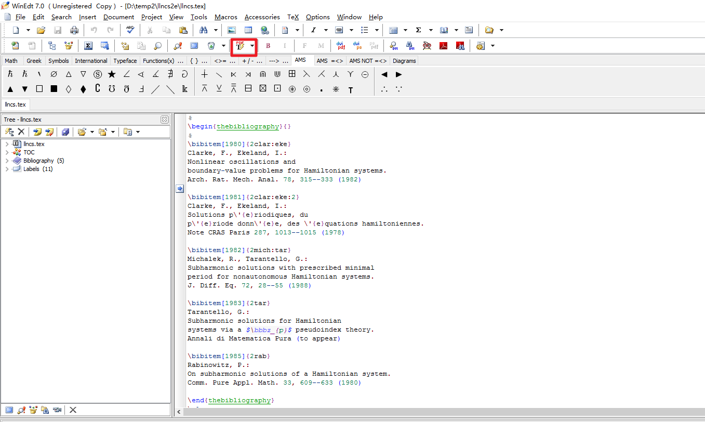

LaTeX 学习笔记
上周末快速学习了一下LaTeX，在这里记录一下。本文主要内容包括我在写论文的过程中从安装软件到最后生成PDF一路碰到问题与我找到的解决方案，不以探究LaTeX内部原理为导向，仅是为了实现想要的展示效果。
先说一下LaTeX的用途。LaTeX可以和Word对比，像word一样，它可以进行文字处理：文字编辑、图文混排等。在论文写作中，通过LaTeX的模板，可以快速排版，得到很好地展示效果，因此LaTeX受到很多写作者的喜爱，也有挺多人用它制作简历。区别于Word的图形化操作，LaTeX最大的特点就是“程序”化的编辑方式，所有的格式都可以以“代码”的方式规定，脱离鼠标的拖拽，用过Markdown的同学可能会有种熟悉的感觉。总之，论文写作，用LaTeX，挺好。
安装
我安装的是CTeX套装，其中自带WinEdt等编辑器。这里要说明一点：现在的CTeX 安装器有个Bug，安装过程中会把本机的环境变量Path覆盖掉，你没看错，是覆盖，不是追加，所以我现在电脑还残废着。安装前先备份一下，安完再改回去就好了。下载地址
使用
由于我的论文格式要求是LNCS Format，所以以下内容会为LNCS Format为例说明使用过程，其他格式同理。
模板下载
LNCS Format下载地址 ，我选的是“CS Proceedings and other multi-author volumes - using LaTeX2e”模板（官方也有提供word模板）。下载后发现文件里没有.tex文件（LaTeX的编辑文件），我是把llncs.dem直接改成了llncs.tex，应该有其他正确的打开方式吧，anyway，这样就可以编写了，先跑一下看看效果。我使用的WinEdt编辑器，打开llncs.tex后，点击PDFTeXify(编译器器的一种，我在后边也一直用这个，每个编译器具体区别可以自行Google)，就可以自动生成pdf并打开。

哈哈，这样hello world已经成功了，下边就开始了代码搬运工的工作。LNCS选手建议自习阅读模板里的llncsdoc.pdf
基本框框
\documentclass[oribibl]{llncs} // 引用模板格式，llncs为LNCS模板提供，其他模板相应更换 |
注：上边列的package和后边的图表、引用等都有对应，但本文不做特别说明，因为我也忘了。指令错误，可以自动Google缺失包
引用
参考文献
为方便起见，我使用了\bibliography命令，将参考文献单列到一个额外的cited.bib文件里。具体使用说明如下：tex文件里添加：% 设置引用style
\bibliographystyle{splncs}
% 为生成pdf添加reference书签
\addcontentsline{toc}{section}{\refname}
% 引入参考文献文件，cited对应到bib文件名
\bibliography{cited}
% 显示全部参考文献，即使文中没有明确引用位置
\nocite{*}
bib文件里添加：% 示例，可以通过谷歌学术-引用-BibTeX自动生成
@book{citelabel, % 引用标签
title={Participant observation},
author={Spradley, James P},
year={2016},
publisher={Waveland Press}
}
具体引用的地方只要添加\cite{citelabel}就可以了，其中citelabel为上面提到的引用标签，可以人为自定义。
图片，表格，章节引用
在图片、表格、章节中定义 label，然后使用时直接引用即可~\ref{sec:overview}, 比如：\section{System Overview and Problem Formulation} \label{sec:overview}
图片，表格，会在下边有更详细的说明
图表
图片
我使用的图片来源有Visio，Excel，网上介绍的LaTeX教程中，打过建议使用.eps格式的文件，但我在使用时，导入出了问题，没有细查。最终使用的所有图片均为pdf格式，一个图片一个pdf。详细说明如下：
- Visio转pdf: 文件-打印（打印机选Adobe PDF(其他pdf软件同理)），打印当前页（一张图片一张图片转）。
- Excel图标转pdf，选择图标（如折线图）- 文件-打印(打印机选Adobe PDF)
- pdf修剪，裁除白边。我使用的软件是Adobe Acrobat Pro（其他软件同理），打开文件-工具-设置页面框-勾选删除白边距-确定。
经过这几步，这样图片也就变成了我们想要的样子。LaTeX使用代码如下：
单张图片：\begin{figure}
\centering % 居中
\includegraphics[height=3.8cm]{images/Fig1} % 相对路径，可以自行修改
\caption{图片标题}
\label{figlabel} % 引用处使用
\end{figure}
两张图片，一行显示：\begin{figure}
\centering
\begin{minipage}{.38\textwidth} % 通过调整.38数字，控制图片大小
\centering
\includegraphics[width=1\linewidth]{images/Fig1}
\captionof{figure}{Fig1}
\label{fig1}
\end{minipage}%
\ \ \ % 简单的使用空格控制间距
\begin{minipage}{.58\textwidth}
\centering
\includegraphics[width=1\linewidth]{images/Fig2}
\captionof{figure}{Fig1}
\label{fig2}
\end{minipage}
\end{figure}
表格
和markdown一样，表格写起来比较费劲\begin{table}
\caption{table}
\label{table:table1}
\begin{center}
\begin{tabular}{c@{\quad}|@{\quad}c}
\hline
Name & Value \\ \hline
name1 & 1 \\ \hline
name2 & 2 \\ \hline
\end{tabular}
\end{center}
\end{table}
效果图如下：
伪代码
\begin{algorithm}[H] |
效果图如下：
其他需求：
pdf自动生成书签，引用超链接(鼠标点击引用，直接到达被引用处)：
\usepackage[colorlinks,linkcolor=black,anchorcolor=black,citecolor=black,bookmarksopen,bookmarksdepth=2]{hyperref}
- color用于控制引用标号[1],[2]等的颜色，
- bookmarksopen，自动生成书签，由于LNCS特殊格式，bookmarksdepth = 2(原因)，其他格式需要自行调整，有的默认即可。
- 缩减图表与正文间距，在图表前后追加
\vspace*{-\baselineskip} - LaTex输入点
\cdot % 单个点
\cdots % 横向多个点
\vdots % 竖向多个点
\ddots % 斜向多个点
总结
LaTeX学习成本还是要比Word高的，这几天的使用过程中感觉，LaTeX排版确实省心挺多，根据需求选择吧，Word和LaTeX都很好用，关键是得会用。以后如果有机会再深入研究一下，上边提到的各种东西的原理（往往说以后有机会的潜台词就是，哈哈哈）。有问题，多Google，嗯。